The land of fire and ice; we had a few bucket list items to tick off travelling this close to the arctic circle. My mum and Dave flew all the way from Australia to experience the wonders of Iceland. Was it worth the journey? See below to find out!
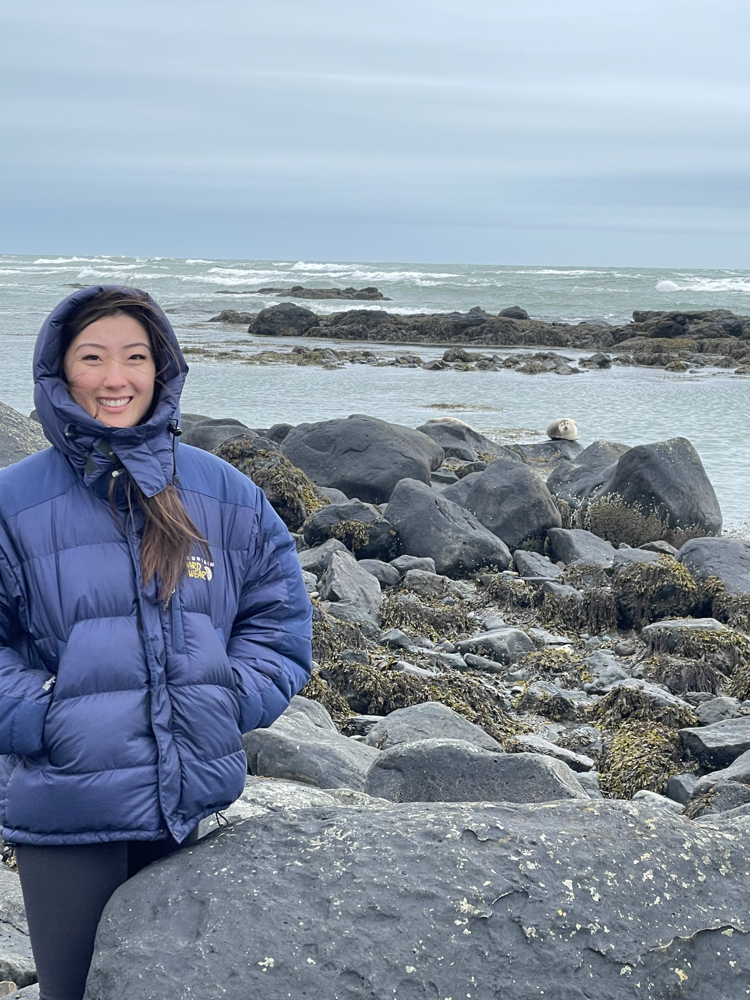
5th April 2025
We arrived the night before weary from our flight and sleepy. It wasn't until 1am that we arrived at the Airbnb and got some much needed sleep. In the morning we stopped off at a bakery and tried to practice our Icelandic phrases.
Then we set off to Ólafsvík from Keflavík. One of our stops along the way was Ytri Tunga Beach which is the only golden sand beach in Iceland. We were also rewarded with fantastic views of seals playing in the water and relaxing on the rocks! They were so cute when they hopped around on the rocks! We also toured some fascinating lava caves that were devoid of any natural light and ended the day up close and personal with some Icelandic horses who were almost too curious... The weather was cold, windy and cloudy but we couldn't have asked for a better start to our trip!
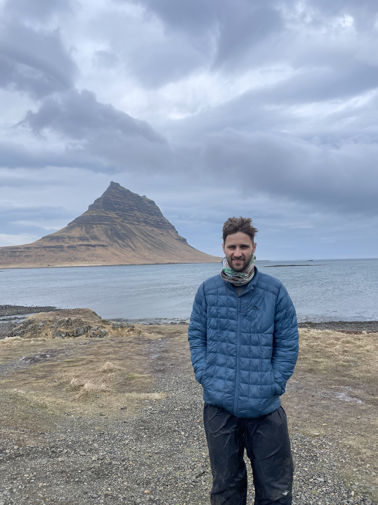
6th April 2025
We started the morning driving back along Snæfellsnes Peninsula, stopping at Saxhóll Crater, Djúpalón Beach and Dritvík. It was so windy we could almost lean 45 degrees into the wind and stay standing! The coastline was marked with aqua blue water against the black sand beach. All this adjacent to the lime green moss covering black volcanic rocks. We stopped for lunch at a local cafe with some soup and fish mash. We then drive to the Rauõfeldsgjá Canyon which was spectacularly carved into a large cliff face with ice scattered along it. Dave and I scrambled up the canyon, I came back wet and covered in dirt from a trip into the water when an ice shelf broke away. We made it out and took ourselves to the famous Kirkjufell which is a standalone mountain next to the town Grundarfjörõur and was filmed in Game of Thrones. We didnt stay long as it was getting late although we did have time to visit the horses one more time before calling it a day. Unfortunately the clouds stuck around so Northern Lights sighting was still on hold...
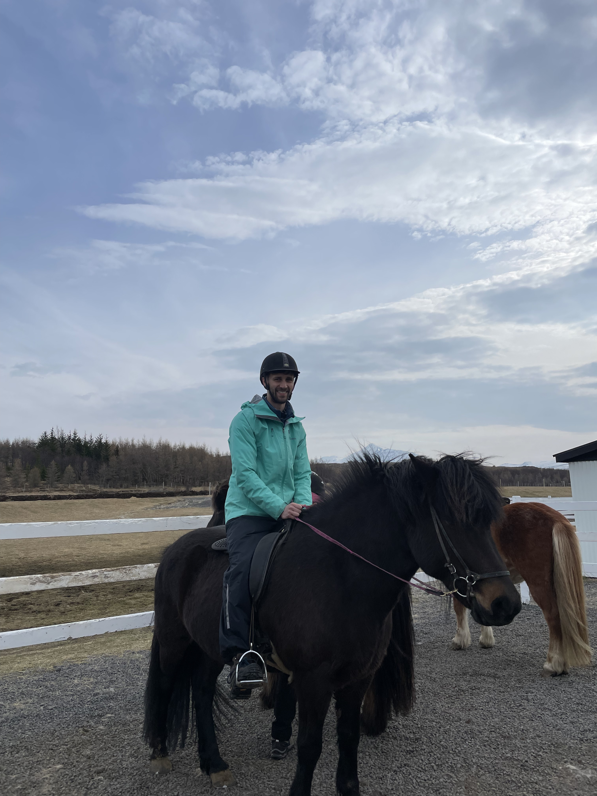
7th April 2025
We woke up to the sound of gale force winds lashing the land and the sea outside. We packed the car and started the 5h journey to Akureyri. I was extremely nervous to ride the Icelandic horses but it turned out to be an awesome ride with the backdrop of snow capped mountains and gushing waterfalls. We were able to experience one of the unique Icelandic gaits called Tolt. It involved a lot of bouncing and I wondered whether I was actually in control after all or I was at the mercy of Frech (cheeky in German!), my horse. We then arrived in Akureyri after another hour of driving and were greeted with love heart traffic lights!
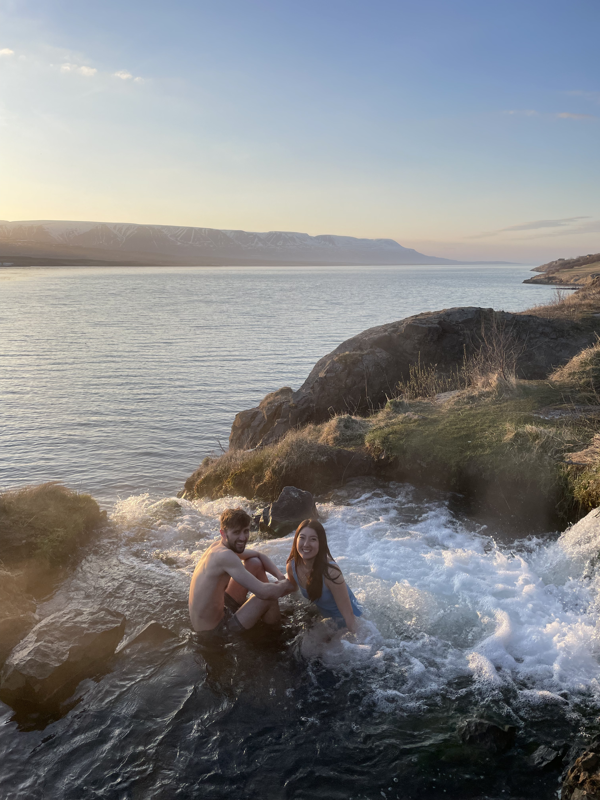
8th April 2025
I was apprehensive to say the least to start this day as we had booked a 3h whale watching tour. When we arrived and I saw the small wooden boat from the 70s that we were to ride on I think my stomach heaved. We geared up in thick overalls and took the journey out of Húsavík. The first 15 minutes were smooth sailing, but it turned downhill VERY quickly. Sophie and I both went non-verbal as seas got choppy and water sloshed on to the boat which was rocking violently from side to side. We only caught a glimpse of the pod of White Beaked Dolphins circling our boat as we tried to settle our stomachs. We could still admire the sharp black colour of the dorsal fins curving out of the water every few minutes. We also got the chance to see a colony of puffins congregating on Lundey Island, mostly untouched by humankind. The sun came out as we headed back to shore and our stomachs settled once again.
We then took off to Ásbyrgi to see a canyon spanning three "Foss". The largest and most impressive being Dettifoss, the most powerfull waterfall in Europe. Even though we were hundreds of meters from it we could feel the power and spray from the waterfall. We made our way back to Akureyri but not before stopping at some volcanic vents which were spewing sulphur with some force from the ground. We also walked over bubbling pools of mud and acid. As the sun set, we found a beautiful natural secret thermal pool overlooking the fjord and Akureyri. After taking pictures for the gram we headed home to rest.
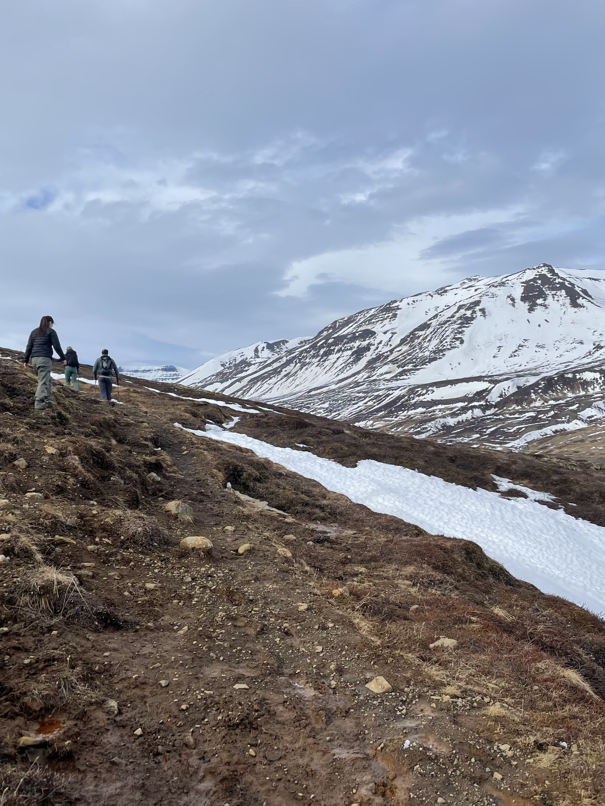
9th April 2025
Mount Súlur looms above Akureyri and this morning we tried to tackle the summit with the sun shining and spirits high. Without microspikes the path to the snow capped summit looked challenging and it proved to be so, as we traipsed through a mix of mud, snow and ice. Sophie lost and recovered a shoe to the thick mud and we all felt the cold snow seeping into our shoes. About half way to the summit we had to call it quits with the wind picking up and wet feet. However we did get a fantastic view of Akureyri backed by the surrounding snow capped mountains.
Exhausted we rested for the remainder of the afternoon and ended the evening in the Forest Lagoon which had thermal pools around 40 degrees. We did cycles of the hot sauna at 70 degrees and 65% relative humidity followed by a cold plunge in 11 degree water. This was a bit of a workout but is thought to improve your health, including cardiovascular capacity.
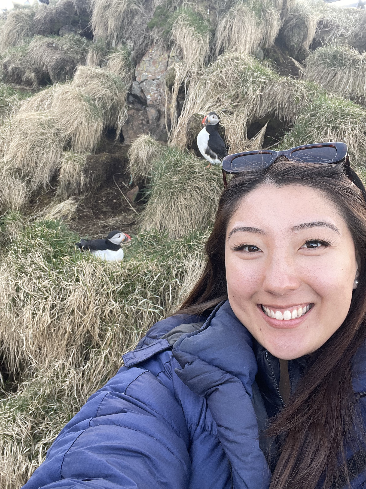
10th April 2025
Iceland is full of spectacular waterfalls and this morning we saw Goðafoss, a slightly smaller waterfall but with as much power as the others we had seen. As we stood meters away from the edge of Goðafoss we were mesmerized by the chaotic movement of the water. On we drove towards Egilsstaðir but stopping along the way at Lake Mývatn to view some of the rock formations at the lava fields and a massive Tuff Ring crater 1000m in diameter and over 100m tall created by explosions from when lava met with running water thousands of years ago. Finally we stepped into a hidden lava cave with geothermally heated water at just the right temperature and the site of a Game of Thrones scene!
We journeyed further east and stopped at Studlagil Canyon, formed when an upstream dam was built which subsequently lowered the water level to reveal breathtaking basalt columns. Although the water was a brown colour with floating ice, the pureness of the towering columns were reminiscent of a grand cathedral. Even more stunning were the directions that the columns curved and bent almost as if they had been sculpted by hand. We pressed on to make it to the far north east of Iceland before sundown to experience a spot where you can be up close to puffins. Hafnarhólmi is famous for a small island where puffins land during breeding season. We were able to stand less than a meter from the puffins, observing as they danced to attract a mate or tapped beaks with another puffin for social interaction. It was truly a once in a lifetime experience.
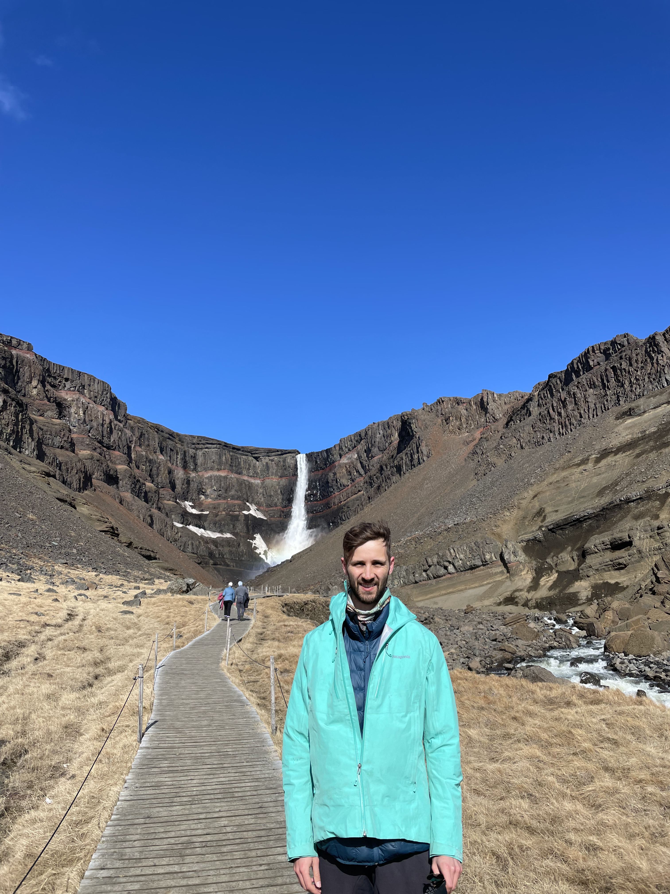
11th April 2025
We woke up to a sunny but WINDY morning in Seyðisfjörður. First stop on the road: Hengifoss. A steep 350m climb up a winding canyon with several sub-waterfalls lead to the main event. One of Icelands tallest waterfalls was also surrounded by layers of black volcanic rock separated by layers of iron rich soil. Climbing down we were battered with gale force winds (once again). We then travelled back into Egilsstaðir for some local fish products cooked before our very own eyes.
The rest of our day was spent driving further down the east coast to our hotel with a sneak preview of our activities at the Jökulsárlón glacier lagoon. As we drove past we marvelled at how the ice of the glacier spilled out over the mountains like a massive tongue. Our appetite had been wet...In the early hours of the next morning we were woken up by the hotel letting us know that the Northern Lights were visible. We rushed to get on our clothes and out to the shared balcony to see a faint grey streak in the sky. We marvelled at how strong it looked against the sky and we rushed back to the room to layer up, but when we retuned outside, the colour and strength had faded signficantly. We were still able to enjoy the stunning effects in the sky but hoped we would get another chance to see this rare event.
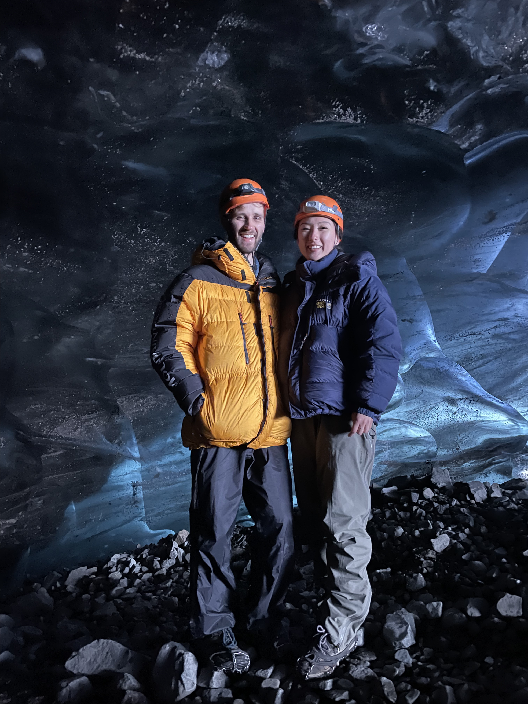
12th April 2025
We strolled up to a super jeep, a 4WD with massive wheels almost as tall as Sophie was. The jeep took us closer to the Vatnajökull glacier over rough bumpy terrain where we started a hike in microspikes to the ice cave. The theme of the hike was the changing landscapes, as we were shocked at how much the glacier had retreated in the last 100 years. At the end of the last local ice age the glacier extended to the sea but had retreated extensively and was now retreating at between 50 to 150 meters per year. Furthermore, none of the glaciers in Iceland are growing anymore, even in the winter. In fact, the ice caves that the locals explore each season change because of the retreating glacier. We saw the remains of last seasons glacier collapsed and covered in dirt. Nevertheless, we reached the ice cave and were astounded by the colours and textures in the cave. Bright blue streaks wound round the dimple textured ice. It was bittersweet but fitting with the theme of change that this ice cave would no longer exist next year as the glacier continues to retreat at an alarming pace.
Along the coast downstream of the glacier lay the Diamond beach, so called because chunks of the glacier ice would break off and float down to the beach. This left the black sand of the beach sparkling with resplendant and clear ice crystals slowly melting away. Further south along the coast lay another lagoon where we took a boat right up to the edge of the glacier. The scale of the icebergs is really evident in the boat as we gave wide berths to the smallest of icebergs because underneath the water they could spread far. The wind was picking up and we were expecting a blizzard the next morning. We ended a day soaking in the spa and sweating in the sauna.
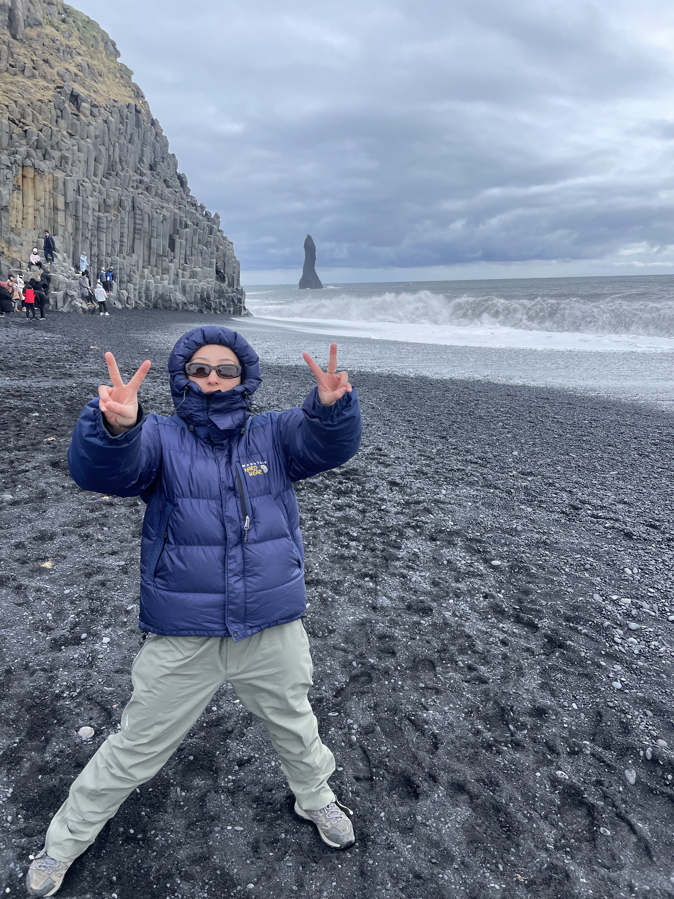
13th April 2025
We stopped to relax for a bit this morning as we took to the spa and sauna again. We left abruptly to make it to the Sólheimajökull glacier to hike and climb on the ice. However when we arrived, the wind was whipping our faces and the tour guide had cancelled the tour. Disappointed, we backtracked our way into Vík and studied some of the sights around. We made our way to the black sand beach, famed for its so called 'Sneaker waves'. Large sets of waves would suddenly arise, catching people off guard and knockong them over and, in the worst case, sucking them into the sea. We didn't see any sneaker waves but a few of the tourists got their feet wet...
We then slurped down some yummy soup in a bread bowl before catching a fascinating show which provided information of the volcanic activity in Iceland and ended showcasing lava behaviour with a demonstration. The heat produced from the flowing lava they demonstrated was incomprehensible and the glass, obsidian and basalt that it formed as it cooled was spectacular. It was as close as we had been to seeing a true Icelandic eruption without any of the danger...
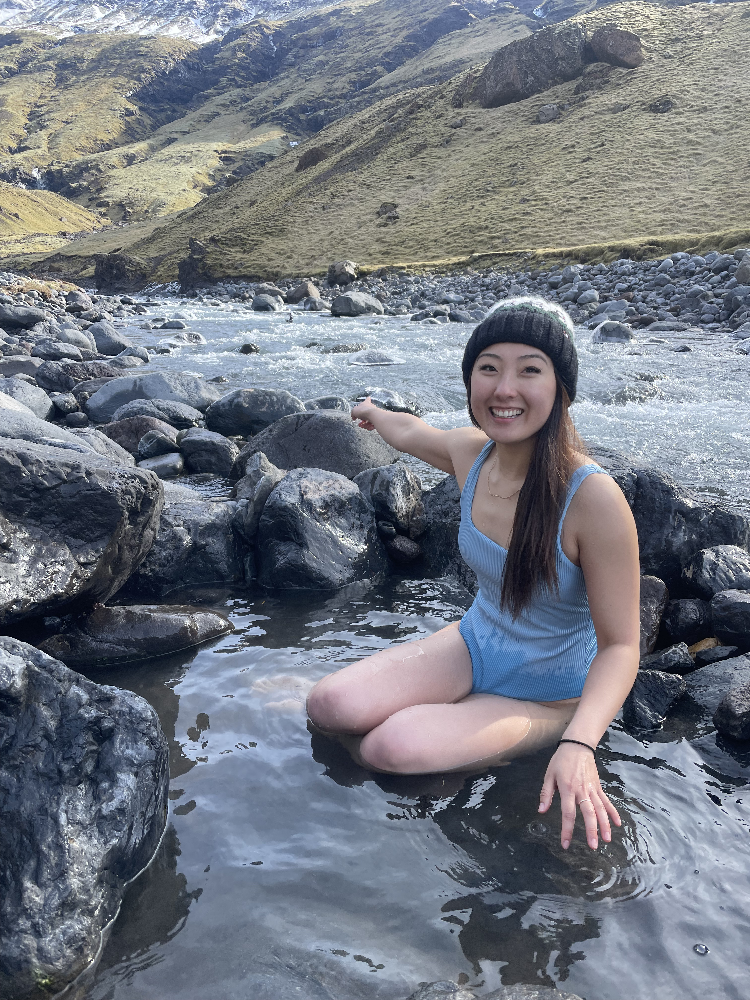
14th April 2025
It was off to Skógafoss waterfall which was a 62m tall waterfall with immense power. Still, this was no match for the other waterfall that we saw this day which was Seljalandsfoss. We donned our rainproof coats as we walked behind the waterfall. Such was the power of the waterfall that we walked out soaked even without getting super close to the pummeling power of the water. It was interesting to see the spray being blown upwards by the wind and creating a frost layer surrounding the waterfall. We also delved into the historical side of things by visiting the Skógar museum which had interesting sections on fishing and architecture during the development of Iceland. Finally we drove to Hveragerði to try and see the Geopark but unfortunately it was closed by the time we arrived...
Our accomodation for the night was a unique bubble dome, inside of which was just a bed, but it was hardly noticeable as you had a breathtaking view of the sunset through the clear dome. Fast forward a few hours and we were fast asleep but awoke to hear Dave rapping at our door. As we looked up we got our second glimpse of the Northern lights. A faint and dull streak stretched across the night sky. Through our cameras we could see the unmistakeable bright green shade of the Aurora Borealis. We admired as slowly our eyes asjusted and stronger streaks appeared in the sky. But it wasn't until we had abandoned the cold night for our warm domes again that we saw the real force of the lights. As our eyes slowly shut again, Sophie pointed up to the sky. Sure enough we were stunned by a brightly colour streak dancing in the sky. We rushed outside again and saw one of the most beautiful sights we had ever seen. A streak of green, yellow and pink was swirling slowly across the sky. This time we had no need for cameras to see the vivid lights. The streak had the appearance of piano keys, lighting up as they played a stunning tune across the starry night. We were mesmerised as these lights playfully disappeared and reappeared for minutes. We drifted off to sleep as the lights faded, overjoyed at experiencing such an awesome event and ticking it off our bucket list.
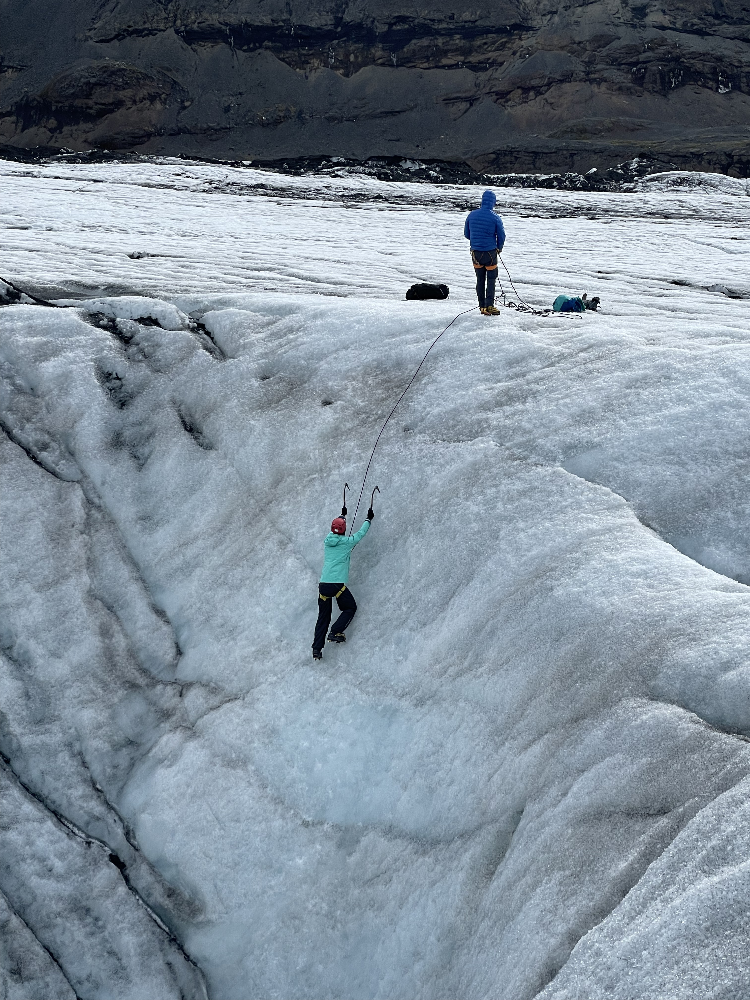
15th April 2025
This morning we backtracked east to the Sólheimajökull glacier to reattempt the ice climbing. The day was warm and calm, perfect conditions as we set off to the glacier. Bergur explained the basics of ice climbing which seemed simple but as we got to the first moraine, we would soon find out it was anything but simple. Sophie went first, and almost abseiled directly into a hole at the bottom of the moraine. However, she bravely made it up the first 10m climb with what looked like relative ease. I was next up and immediately found trusting my feet on the crampons extremely difficult. It was extremely different to any type of rock climbing I had done before. It was almost as if the arms took a back seat to the legs as you trust all of your weight to the crampons kicked into the ice. It was important to try and keep our arms straight, hips to the wall and heels down. However, all this information went out the window as I bicep-abused and wrecked my calves all the way to the top of the climb. My forearms and calves were screaming at the top of the climb but we had all enjoyed the first climb. The second was closer to 15m but almost vertical. This one felt twice as hard for most of us and there were multiple foot slips. The ice axes felt like 50kg blocks for the last few meters but all of us impressively reached the top. The final two climbs were slightly easier but still tricky to maneouvre and plenty of fun. The wind had picked up though, so for the final climb we had ducked into a crevasse and moved closer to the glacier edge where the ice was dirtier with volcanic ash. Exhausted after our climbs we made our way back to the car with a content feeling. We then drove to our final destination in Reykjavík and had traditional Icelandic soup and fish mash before nodding off.
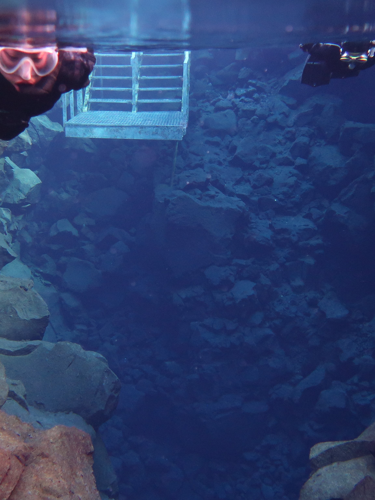
16th April 2025
It was time to head around the Golden Circle now that we had made it back to Reykjavík. First up was snorkelling between the North American and Eurasian tectonic plates at Þingvellir National Park. I arrived with trepedation at the thought of 2 degree water temperatures and strong winds. However they had soon wrapped us up in thick dry suits along with gloves, hoods and snorkels. We really looked the part with only skin from our squished faces visible. We slowly descended into the blue water of Silfra and were astounded at the clarity that we could see! The water was sourced from a nearby glacier and travelled underground through the porous volcanic rock to help keep it crystal clear. Surprisingly warm and buoyed, I marvelled at how empty the water was with no fish or coral because of the lack of nutrients. We drifted along with the current, gazing down between the tectonic plates which looked nothing more than any other riverbed aside from the clear water. After 30mins and thoroughly chilled we exited the water. Onwards we drove to an organic tomato farm where we had the most delicious tomato soups. Our penultimate stop was Gullfoss, undoubtedly a beautiful and one of the biggest falls in Iceland although somewhat marred by the gale force winds which threatened to tip you over the edge. Finally we stopped at Geysir where we watched the Strokkur geyser erupt! Every 10 minutes this geyser will spurt water tens of meters into the air although in between, it tantalises you with a pulsating mouth, bubbling and splashing away as if threatening to erupt at any second before calming again.
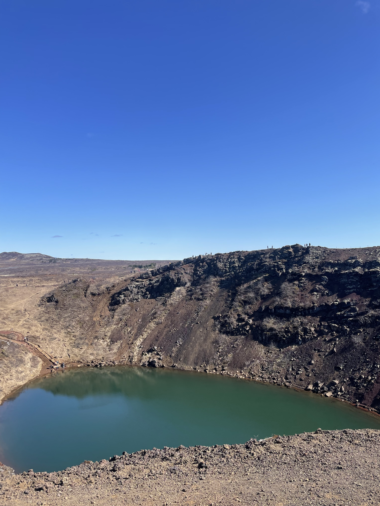
17th April 2025
Our penultimate day started with a trip to the Geopark in Hveragerði. In this small town built on an area of high geothermal activity, cooking bread for 18h in the geothermal heat is still commonplace. We followed suit and boiled an egg in a geothermal pool at 80 degrees and watched as another geyser erupted every 20 mins. This eruption was different as rock covered a barely visible hole and the eruption occured without warning! We also were able to experience a magnitude 6.6 earthquake for 20 seconds much as this town would have felt for the real earthquake in 2008. The shock of the strength of the shaking ground stunned us all. Next we hiked up to the Kerið crater formed by a volcano collapsing into itself. It now had a green pool of water settling in its centre surrounded by beautiful shades of red around the crater. We started relaxing at the Hrunalaug private pools which were a rustic change to the mega resorts like Blue and Sky Lagoons. While the water was not hot, the atmosphere felt awesome with traditional huts surrounded by natural fields. We ended our last night in Iceland by tasting some of the unique foods the country had to offer, including Puffin, Foal and Saltfish.
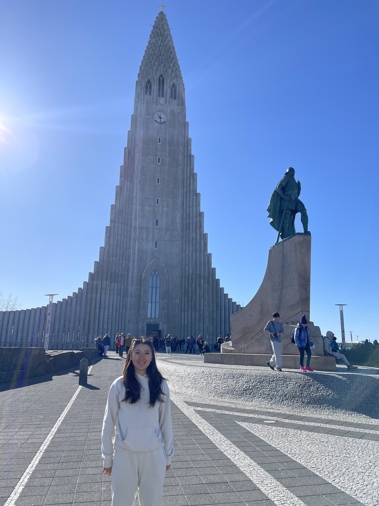
18th April 2025
Our final day was set in Reykjavík where we walked to the famed opera house. The glass panels at interesting angles had a stunning view over the harbour and we had a short trip inside. We then walked over to the rainbow street leading to the church of basalt columns. After admiring the church we headed to the Penis museum which showcased specimens from many animals all over the world and gave some interesting facts about each. We topped the day off with a traditional Icelandic hot dog which was delicious. After, we headed back to Keflavík airport to catch our flight back to London.